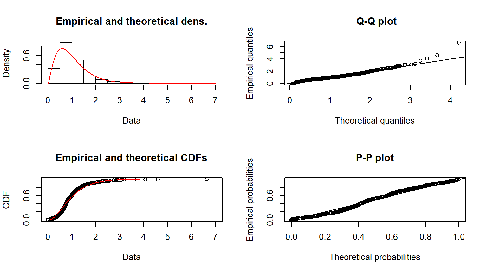

- Revisão de Inferência
09 de abril de 2018
O que é inferência paramétrica?
O analista assume que \((x_1,...,x_n)\) são realizações de uma amostra aleatória \((X_1,...,X_n)\), tal que \(X_i\) são variáveis aleatórias independentes com essa distribuição.
\[X \sim F(.; \boldsymbol \theta) \]
\[F(x; \theta) = (1 - e^{-\theta x}) \,\mathbb{1}_{\mathbb{R}_+}(x) \] para \(\theta \in \mathbb{R}_+\).
Nosso objetivo é encontrar um estimador \(\hat{\boldsymbol \theta}\) para \(\boldsymbol \theta\).
Depois de encontrar um estimador, o analista pode obter suas medidas de interesse (média, variância, quantis, probabilidade de sobrevivência, etc.) a partir da distribuição estimada \(F(x; \hat{\boldsymbol \theta})\).
\[\mathcal{L}(\boldsymbol \theta, x_1, \dots, x_n) = \prod_{i=1}^n f_X(x_i; \boldsymbol \theta) \]
É mais conveniente maximizar a log-verossimilhança com relação a \(\boldsymbol \theta\).
Para algumas distribuições, conseguimos encontrar uma forma fechada para o EMV. Caso isso não seja possível, podemos utilizar otimização númerica para maximizar a log-verossimilhança.
No R, o pacote fitdistrplus tem funções implementadas para encontrar o EMV de várias distribuições.
## Warning: package 'xts' was built under R version 3.4.4
## Warning: package 'sp' was built under R version 3.4.4
## Warning: package 'fitdistrplus' was built under R version 3.4.4
(Para instalar o pacote CASdatasets: http://cas.uqam.ca/)
## dados seguro contra terceiros Itália
data("itamtplcost")
x = itamtplcost$UltimateCost/10^6
summary(x)
## Min. 1st Qu. Median Mean 3rd Qu. Max. ## 0.002161 0.627719 0.844011 1.015352 1.224316 6.639500
## EMV fgamEMV = fitdist(x, "gamma", method="mle") fgamEMV
## Fitting of the distribution ' gamma ' by maximum likelihood ## Parameters: ## estimate Std. Error ## shape 2.398655 0.1489696 ## rate 2.362486 0.1631542
summary(fgamEMV)
## Fitting of the distribution ' gamma ' by maximum likelihood ## Parameters : ## estimate Std. Error ## shape 2.398655 0.1489696 ## rate 2.362486 0.1631542 ## Loglikelihood: -385.1474 AIC: 774.2947 BIC: 782.5441 ## Correlation matrix: ## shape rate ## shape 1.0000000 0.8992915 ## rate 0.8992915 1.0000000
plot(fgamEMV)
